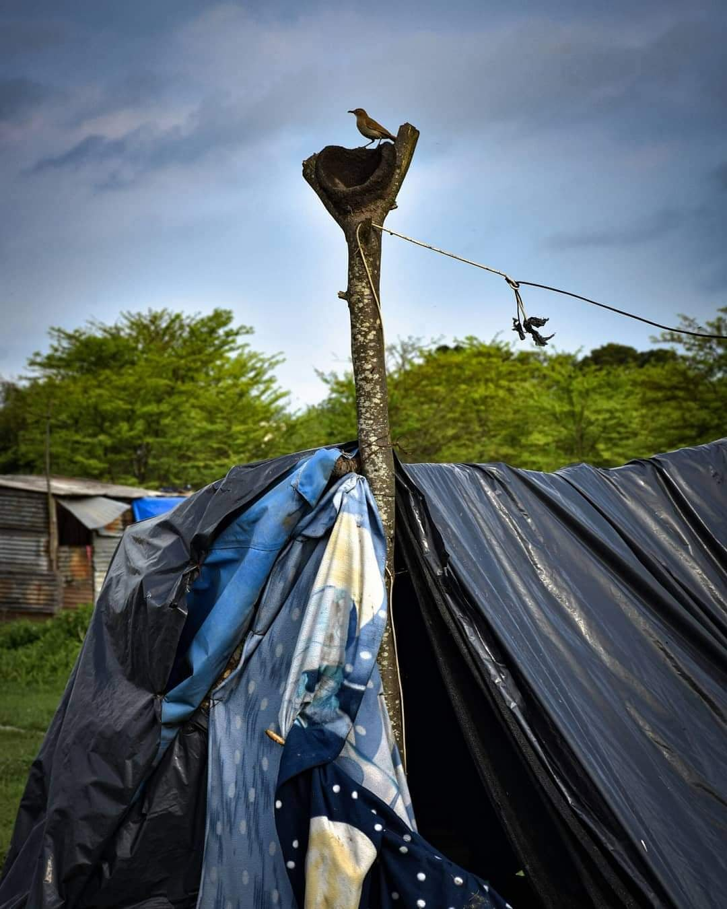
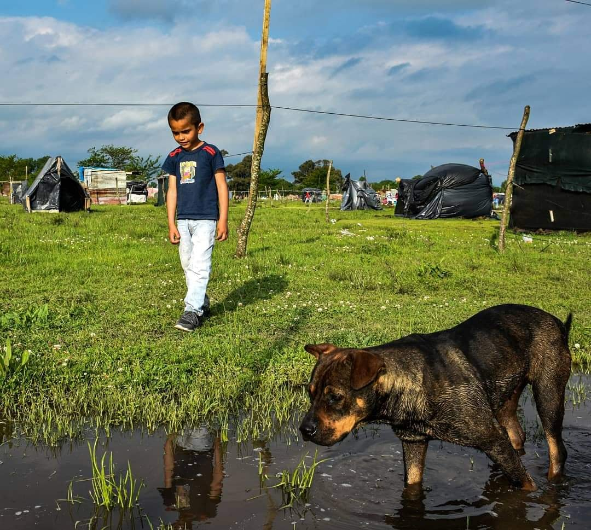

Desde Niñez y Territorio repudiamos la brutal cacería desatada hoy en Guernica por la policía de la Provincia de Buenos Aires, dirigida por Berni, dispuesta por la (in)justicia y avalada por el Gobernador Kicillof.
Repudiamos la represión, los diálogos perversos como método disuasivo, las promesas de funcionarios que se pierden una vez que empieza la próxima promesa, los argumentos simplistas de periodistas y opinólogos sobre una deuda que tiene el
Estado con un tercio de la población, las balas de Berni y su quema de ranchos.
Repudiamos también la ausencia de Marisa Graham, flamante defensora de los niños, niñas y adolescentes de la Nación, quien no se involucró en una toma dónde la mayoría de lxs habitantes son niñes.
En plena pandemia y en medio de una crisis económica descomunal que empuja a millones de compatriotas a la pobreza e indigencia, afectando principalmente a niñas, niños y adolescentes, la represión surge nuevamente como respuesta a los
reclamos populares por derechos tan elementales como la vivienda digna. Esta respuesta represiva tiene un claro sesgo de clase. Los sectores más vulnerables de la población son reprimidos violentamente ante una usurpación de tierras; sin
embargo, cuando estas usurpaciones son realizadas por sectores privilegiados no se actúa de la misma manera. En este país hay una justicia para pobres y otra para ricos.
Como organizaciones, trabajadoras y trabajadores de la niñez, pretendemos denunciar esta deuda que tiene nuestra democracia con nuestro pueblo. Y así como decimos que el "EL HAMBRE ES UN CRIMEN", expresamos que la falta de vivienda digna
también lo es.
En el Partido de Presidente Perón, en la localidad de Guernica, parece que no corre esa bandera con la que llegaron al poder: la Patria es el Otro.
Nuestros Valores
Una excusa más para mirarnos y poder ver hermosas sonrisas, mimos para estas vacaciones de invierno, las maestras armaron bolsitas con cosas ricas para compartir en familia y la comunidad de movilizó para llegar a todas las
casas... poco a poco iremos subiendo de este hermoso día, derribando la coronita... a seguir cuidandonos y pronto volver a vernos en acción...Fue gracias al trabajo de 50 personas que integran el programa Argentina Trabaja perteneciente al
Ministerio de Desarrollo Social de la Nación.
Desde hace un año, más de 50 personas que integran el programa Argentina Trabaja perteneciente al Ministerio de Desarrollo Social de la Nación, transformaron un predio abandonado en una huerta orgánica.
El baldío está ubicado en Florencio Varela. Los integrantes asisten todos los días y en la huerta aprendieron a sembrar zanahoria, remolacha y repollo, que luego reparten entre ellos para cocinar en sus casas.
.

Educarnos para la sustentabilidad
Sensibilizamos y capacitamos a la comunidad educativa sobre temáticas ambientales, a través de la reconección con la naturaleza y la revalorización de los espacios verdes. Concientizamos y acompañamos desde la formación de ciudadanos/as ambientalmente comprometidos, para generar los cambios sociales y culturales necesarios que nos permitan construir un modelo de desarrollo sustentable..
Nuestro objetivo
“El objetivo del proyecto es difundir la cultura del auto cultivo, del autoconsumo de alimentos. Tener una huerta en el fondo de la casa, utilizando la menor cantidad posible de agroquímicos”, explicó Purtic, docente del Instituto de Ingeniería y Agronomía, quien destacó “la satisfacción de ir formando a niños, jóvenes y adultos en la cultura de trabajar la tierra”. .

A través de esta iniciativa “se promueve la capacitación y se anima a los participantes del taller a que desarrollen su propia huerta en sus hogares” a fin de mejorar la economía familiar e incluso a distribuir su producción entre la comunidad .
.
Y pudimos! pareciá q no, todo muy cuesta arriba, sin embargo se pudo organizar y unir fuerzas para sacar adelante el campamento de hijes del campo. Muchas y muchos niñes pudieron conocer el mar, los lobos marinos y familias enteras renovar aires para este año que ya comenzó aunque no pero sí..
Compartimos tambien entre la comunidad las fiestas de fin de año, con mucho cariño y amor.